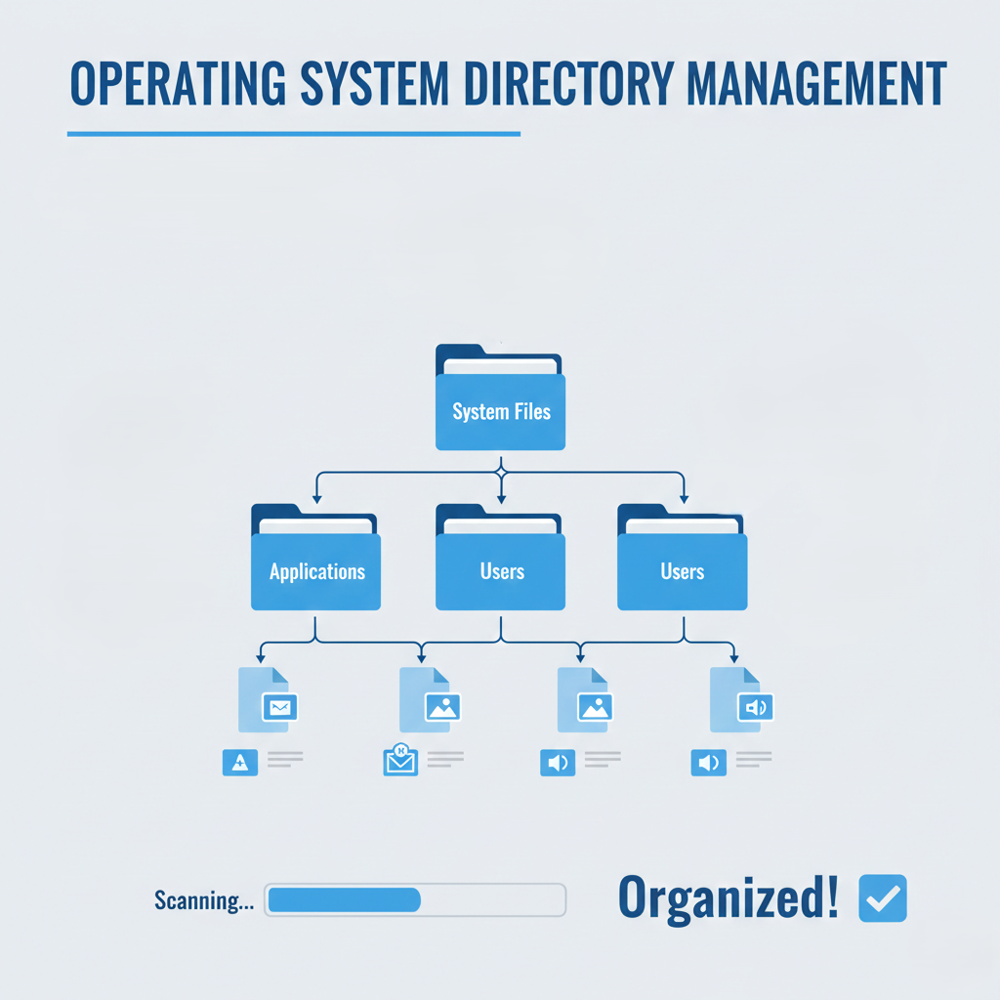
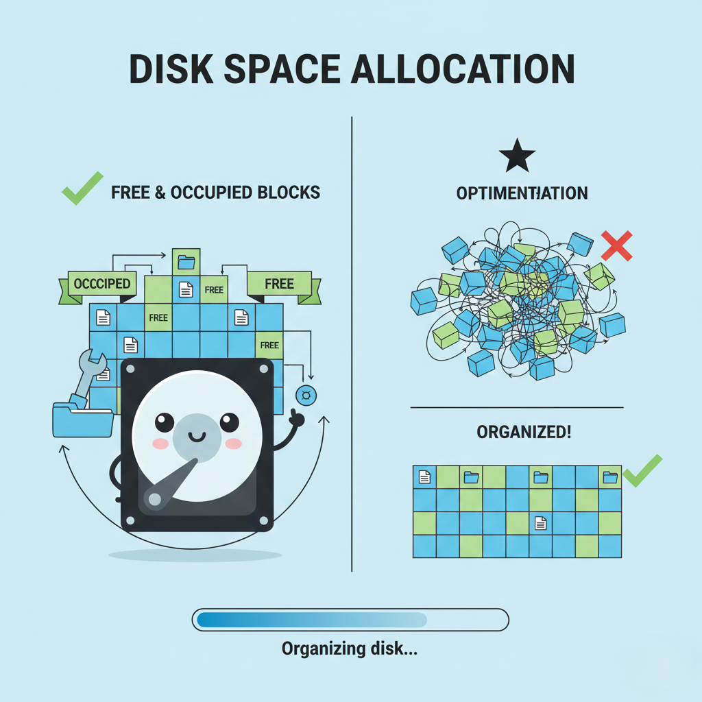
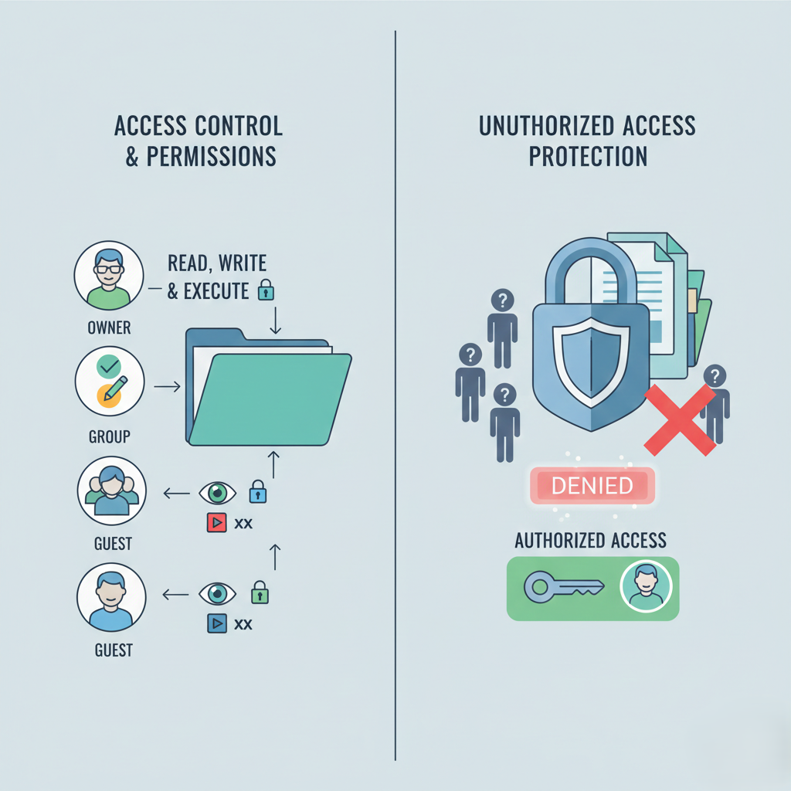
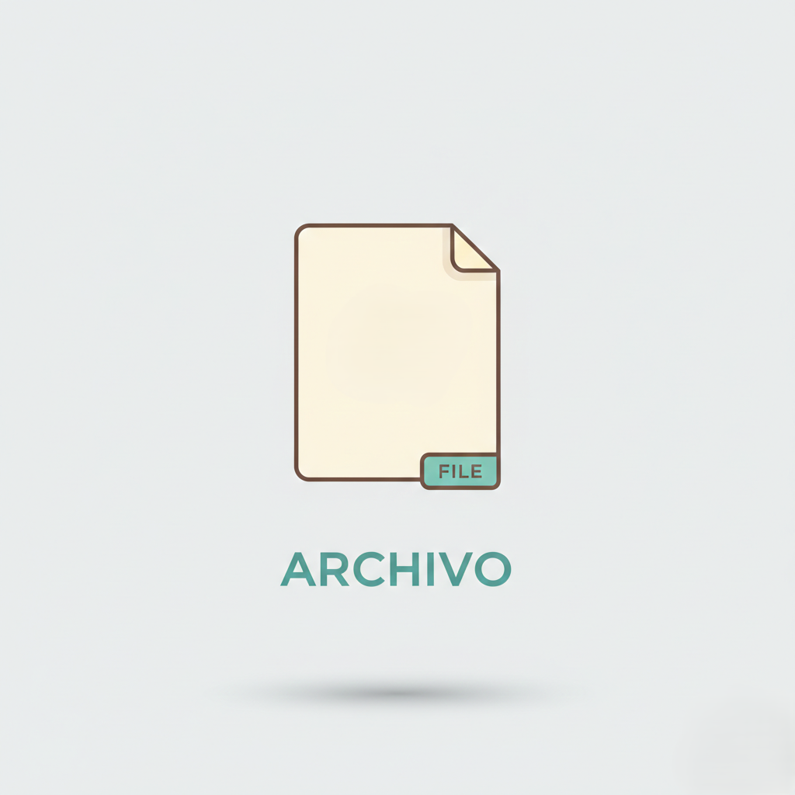
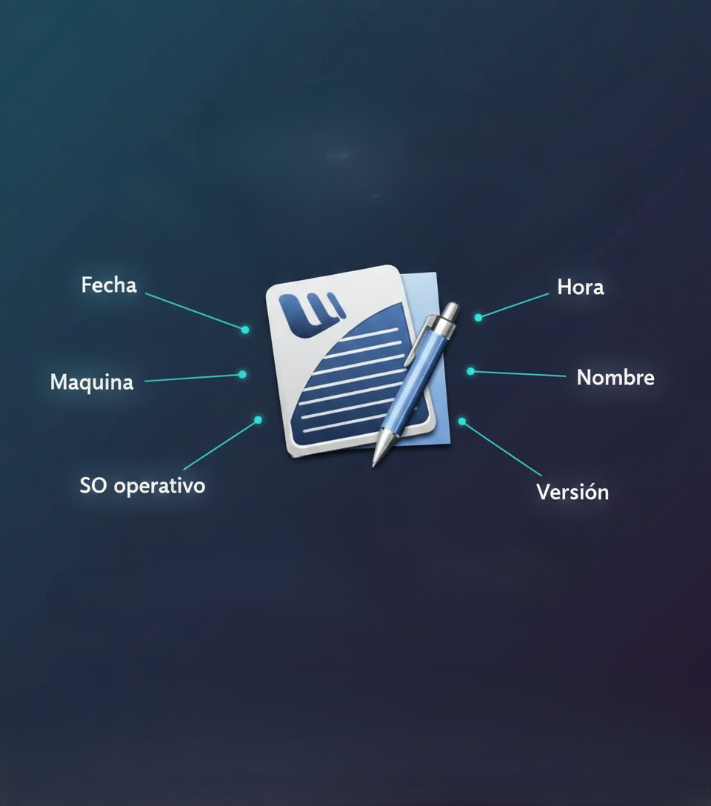

SISTEMAS DE ARCHIVOS
Ingeniería de Sistemas
¿Qué es la Gestión de Archivos?
Es el sistema que organiza y controla cómo se almacenan los datos en el disco. Permite crear, buscar, modificar y eliminar archivos de forma eficiente, manteniendo todo ordenado y accesible.
Funciones Principales del SO
Creación y Eliminación de Archivos
Permite crear, borrar y renombrar archivos asignando espacio y metadatos.
Gestión de Directorios
Organiza archivos en estructura jerárquica tipo árbol para fácil localización.
Asignación de Espacio en Disco
Controla bloques libres y ocupados, evitando fragmentación excesiva.
Control de Acceso y Permisos
Define quién puede leer, escribir o ejecutar archivos protegiendo la información.
Componentes del Sistema
Estructura jerárquica que organiza la información
Archivos
Unidad básica donde se guarda información (fotos, documentos, videos).
Carpetas
Contenedores que agrupan archivos de forma jerárquica.
Metadatos
Información adicional: tamaño, fecha de creación, permisos.
Bloques
Divisiones físicas del disco donde se escribe la información.
Métodos de Organización
Aquí es donde el sistema decide cómo acomodar los archivos en el "estante" del disco
Asignación Contigua

Bloques consecutivos. Rápido para leer pero inflexible.
Asignación Enlazada

Bloques con punteros. Flexible pero más lento al buscar.
Asignación Indexada

Usa índice con direcciones. Método equilibrado y moderno.
Tipos de Sistemas
FAT32
Estándar universal. Ideal para USB y dispositivos extraíbles.
NTFS
Sistema de Windows. Soporta archivos grandes y seguridad avanzada.
ext4
Sistema de Linux. Extremadamente rápido y resistente a errores.
APFS
Sistema de Apple. Optimizado para SSD con cifrado fuerte.
Ética y Seguridad
Responsabilidad profesional en el manejo de datos
Confidencialidad
Proteger datos privados de filtraciones.
Integridad
Evitar alteraciones no autorizadas.
Disponibilidad
Acceso a datos cuando se necesiten.
Responsabilidad
Proteger privacidad y derechos digitales.
Ingeniería de Sistemas | Sistemas de Archivos | Gestión de Datos